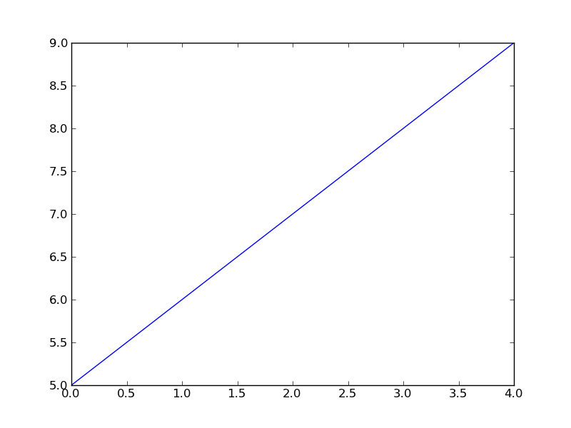

Generar gráficas y animaciones de la simulación¶
Para poder apreciar si la simulación está funcionando correctamente, lo mejor que puede hacerse es visualizar la forma en que está evolucionando a través de gráficas y animaciones.
En Python esto puede hacerse por medio de dos librerías:
Matplotlib¶
Matplotlib ha sido ideada para generar gráficas bidimensionales de alta calidad. Para cargar la librería usamos el comando:
import matplotlib.pyplot as plt
pyplot es un submódulo de Matplotlib y por costumbre se importa con el nombre corto plt. Dentro de este módulo, el comando que más vamos a utilizar es plot, que tiene la siguiente sintaxis:
plt.plot(x, y)
donde x es una lista que contiene los datos que se van a graficar en el eje x, mientras que y contienen los del eje y.
Nota
Para que plot funcione correctamente, las dos listas deben tener el mismo número de elementos.
Por ejemplo, para graficar la línea vertical  podemos usar el comando:
podemos usar el comando:
In [174]: plt.plot([2]*10, range(10)) Out[174]: [<matplotlib.lines.Line2D at 0x5126ad0>]
plot también puede recibir una sola lista como argumento, en cuyo caso toma esta lista como y, mientras que utiliza x automáticamente como range(0, len(y)). Por ejemplo:
In [175]: plt.cla() In [176]: plt.plot(range(5,10)) Out[176]: [<matplotlib.lines.Line2D at 0x52ee650>]
Nota
cla() se utiliza para limpiar la región de la gráfica antes de volver pintar sobre ella nuevamente.
Este método también puede usarse para generar una línea horizontal como:
In [177]: plt.cla() In [178]: plt.plot([3]*5) Out[178]: [<matplotlib.lines.Line2D at 0x5106a90>]
Ejercicios¶
- Usar plot para graficar obtener una gráfica de la posición de la bola vs. el tiempo, y otra de la velocidad vs. el tiempo.
- Graficar una línea horizontal a la altura de la posición inicial y dejar evolucionar el sistema durante al menos 20 segundos. Tratar de entender qué es lo que está pasando en este caso.
VPython¶
VPython es una librería para hacer animaciones tridimensionales en OpenGL. Para cargar la librería usamos el comando:
import visual as vis
Antes de proceder a añadir objetos a la animación, es necesario crear una escena, y definir algunas propiedades de la misma, de la siguiente manera:
escena = vis.display(title='Caída de una bola') # Crea la escena
escena.exit = False # Evita que al cerrar la ventana se cierre la terminal
escena.visible = True # Hace visible la escena
escena.select() # Selecciona la escena para añadirle objetos
escena.autoscale = False # Evita que se reajuste el tamaño de la escena a medida que avanza la simulación
Después de esto podemos pasar a añadirle una caja a la escena, la cual va representar el suelo, de la siguiente forma:
piso = vis.box(pos=(0, 0, 0), length=4, height=0.5, width=4, color=vis.color.blue)
donde pos define el centro de la caja (que en este caso lo colocamos en el origen de coordenadas), length es el largo de la caja, height y width su profundidad.
En último término creamos una esfera para representar la bola como:
bola = vis.sphere(pos=(0, p0, 0), radius=1, color=vis.color.red)
donde pos define el centro de la esfera, radius su radio y color su color, que en este caso hemos elegido como red.
Para generar la animación vamos a actualizar el atributo pos de bola con los valores guardados en la lista posiciones. Por ejemplo, para cambiar la posición de la bola al primer lugar de posiciones usamos el comando:
bola.pos = vector(0, posiciones[0], 0)
Ejercicios¶
Advertencia
Para poder correr simulaciones hechas con VPython con Spyder debe irse al menú Run ‣ Open Interpreter, para abrir un tipo especial de terminal que nos permita correr las animaciones.
Realizar la animación completa de la trayectoria de la bola, usando un ciclo for.
Nota
Usar vis.rate(n) (donde n es un número entero) dentro del ciclo for para no tener que graficar todas las posiciones sino sólo unas cuantas. Experimentar con varios valores n para ver cuál es el que mejor se ajusta.
Hacer que el borde inferior de la bola sea el que choque contra el suelo y no su centro, como está sucediendo hasta el momento.